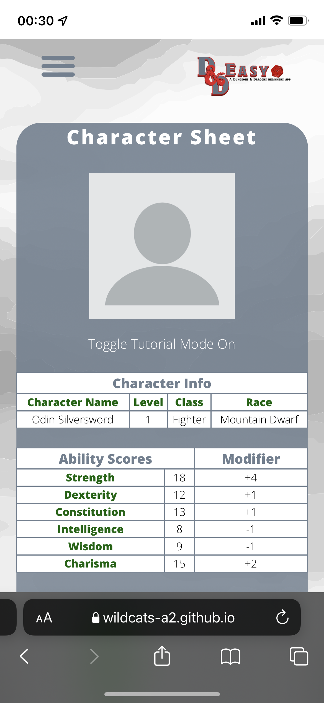

D&Deasy Web Application
Contents
- Overview
- Motivation
- Landscape
- Aim
- Main aim
- Aim/Goal 1
- Aim/Goal 2
- Aim/Goal 3
- Aim/Goal 4
- Plans and progress – 1 page each
- Beginnings and current vision
- Minimum viable product and where we are in relation to this: sample web app, HTML/CSS responsive design first
- Technical ambitions and what is realistic: front end
- Technical ambitions and what is realistic: back end
- Changes to the project scope: scaling back on ideas
- Pie in the sky: where we would like to see the project go and how do we get there
- Roles
- Scope and limits
- Tools and technology
- Testing
- Timeframe
- Risks
- Group processes and communication
OVERVIEW
During the pandemic and a continuing series of lockdowns, we have been boredom struck as we are forced to stay at home. Although there are plenty of distractions around us such as our devices, social media, streaming services and, video games, all of these have one glaring issue, they generally bring us right back to reality! Let’s bring back board game play and start using our imaginations to entertain us once again.
 Hence, we would like to introduce DnDeasy to the public. The objective of this project is to provide a simple and enjoyable way for those who have never played Dungeons & Dragons (D&D) to get across the very basics of character creation, character sheets, gameplay, and general tips so that you can keep up with those that are more experienced. By focusing on simplicity of information delivery with a simple and clean user interface, guidance on the key areas of D&D such as character creation and character sheets, we believe this will appeal to people who are keen to give it a try. As we plan to offer this as a freemium service, there won’t be any barriers for new players regarding costs as there are none for basic usage of the web application. The deeper users get in our app and game play, the premium side of the application comes into play to offer more functionality to truly allow the user to take control of their game play with options such as multiple characters, customizable interfaces etc. This web application will be a worthy companion for those who want to spend their leisure time learning and playing D&D.
Hence, we would like to introduce DnDeasy to the public. The objective of this project is to provide a simple and enjoyable way for those who have never played Dungeons & Dragons (D&D) to get across the very basics of character creation, character sheets, gameplay, and general tips so that you can keep up with those that are more experienced. By focusing on simplicity of information delivery with a simple and clean user interface, guidance on the key areas of D&D such as character creation and character sheets, we believe this will appeal to people who are keen to give it a try. As we plan to offer this as a freemium service, there won’t be any barriers for new players regarding costs as there are none for basic usage of the web application. The deeper users get in our app and game play, the premium side of the application comes into play to offer more functionality to truly allow the user to take control of their game play with options such as multiple characters, customizable interfaces etc. This web application will be a worthy companion for those who want to spend their leisure time learning and playing D&D.
How will our web application differ from others on the market? It won’t be the traditional boring one-paged website and eventually will offer more functionality such as customizable UI to capture an audience that may not be fulfilled by competing applications. Other unique selling points include a clean and interactive platform to keep new end-users actively engaged by guiding them throughout their character creation process, maintaining their character sheets (accessible offline as well) and provide on the fly tips to aide game play. Users will undoubtedly enjoy the game without feeling uneasy or worried if the character they created was passable for the game or feeling underqualified to play with those more experienced!
MOTIVATION
Starting as a fun idea from Harmony’s A1 project, the Wildcats were motivated by her Dungeons and Dragons character creation project as it presented the group with an opportunity to research existing competitors, flesh out the specification and ultimately delve into the technology stack that is now standard in the IT/Web Application space.
Although only a few of the team have actually played Dungeons and Dragons, it represented an excellent challenge for the Wildcats as it has pushed those that know the game to look at what features would attract any new player (keeping in mind what would ignite interest in the game from those with no inclination for imagination based games) and the remainder of us to build up the skills to research and execute a project to the highest standard, even if you aren’t the target audience.
At its core, the project is just a Web Application that utilizes current frameworks such as MERN (MongoDB, ExpressJS, ReactJS and NodeJS) to handle specific aspects of the Web Application to provide a user a seamless encounter with our project. It is obvious that any future employer will see the project and will look past the subject matter and will be able to identify that all members in the Wildcats would now have experience in what is a hot industry topic right now.
LANDSCAPE
Currently, there are many online websites that are aimed at providing resources to enhance the D&D experience, such as D&D Beyond and Roll20. However, these competitors are aimed at the broadest spectrums of resources, providing tools for character creation and campaign creation, to virtual table tops that can map out scenarios.
From a new players point of view, it is easy to get lost on where to start, and even easier to become overwhelmed from the overflow of information. In comparison, DnDeasy aims to allow new players to learn the basics from scratch.
To do this, the website will heavily simplify the processes to set up the game, and dilute content so that it does not overwhelm new users, which in turn should smoothen out the learning experience.
An example of this is in the character creation tool. Instead of providing users with the full list of available options for classes in the game, DnDeasy would only limit choices down to three. Similarly, this would be the case for selecting a character’s race and background. Another feature that simplifies the character creation process would be automated stat distribution based on the previously selected character class and race.
With the combination of these features, we hope to be able to provide tools to users who are new to D&D, without steering them away due to its complexity.
| Features (excluding homebrew options) |
D&Deasy |
Roll20 (free content) |
D&D Beyond (free content) |
| Number of races (including sub-races) available |
3 |
9 |
22 |
| Number of classes (including sub-classes) available |
3 |
12 |
27 |
| Number of backgrounds available |
3 |
1 |
7 |
| D&Deasy |
Roll20 (free content) |
D&D Beyond (free content) |
|
|
|
|
|
 |
|
|
|
* All selections available for subclasses / subraces not shown in screenshots, as users must continue through the process for these options to be displayed.
PROJECT AIM
Our primary aim is to make it easier to learn how to play D&D, get more people having fun and playing with friends. Our vision for this project is to create a web application that will take beginners through the whole character creation process and guide them through a character sheet. The web application will save the content that is created, so players will never lose or forget their characters.
The premium version will allow users to create more characters and share them with others. The plan is to divide and conquer by creating smaller, more achievable goals, the project will come to life as the goals are completed.
GOAL 1 - CLEAN/MODERN UI
Designing and maintaining a clean and functional User Interface (UI) will be paramount to this web application becoming a successful addition to Dungeons and Dragons gameplay. Why is this important to us? We want this to be the “go to” app that fast tracks new Dungeons and Dragons players understanding and enjoyment of the game. By keeping the UI simple, understandable, yet visually appealing, we hope that it will be intuitive to use, provide clear information in a readable format as well as be responsive in its design so we can scale to different screen sizes and still convey the information in a clear manner.

For the test web application, our goal is to use advanced CSS and Javascript to provide a realistic run through of the web application that should be close to the production version. Aided by visual drawings from apps such as Procreate to add a depth to the test web application, we believe it will convey the vision behind DnDeasy.
GOAL 2 - SIMPLIFIED OPTIONS
Within our project, we aim to have a character creation tool that is concise and easy to use. Having this feature is imperative to playing DnD and is usually one of, if not the most daunting aspect of getting started. Due to this, we aim to implement a character creation tool that allows for some freedom of creation, but also is not overwhelming such that newer players are not intimidated by the potential complications that arise when creating a character. Our plan is to have this feature only provide a reduced selection of choices for attributes such as race, to help minimize inexperienced players feeling overwhelmed. Within the prototype, we aim to use a mixture of JavaScript and CSS to give a skeleton to this feature, providing an insight into what the feature will become and what it is capable of.
This feature will become one of the prevalent selling points of DnDeasy. It is due to this that it is crucial that this feature be not only user-friendly, but capable of lowering the intimidation factor of getting started with DnD for potential users / players.
GOAL 3 - USER INTERACTION
With DnDeasy, user introduction and retention are the key in how we’re wanting to present this. As leading into this project, I am a new comer to DnD and having a look into the basics of how the game is played. There are a lot of things that I’ll need to learn and understand before I actually get stated. With this web application, it provides an easier means of how everything is presented and what you’re able to do after creating a character.
Using this as a goal to create a higher user retention into our players is a huge part for the team. To actually meet this goal, we will use the data from our players logged into their accounts and the time spent on how they’re interacting with the site. User feedback and suggestions will be an indicator with how we’re able to provide that entry point to a game with a large learning curve.
GOAL 4 - ACCOUNTS/SUBSCRIPTION
With a web application project like ours, login features play a vital role in ensuring that the user’s data will be saved securely and can be retrieved when needed. In our case, one main bulk of data that will be tied to user accounts are their character sheets, and the data that comes with them. A function like this seems trivial but plays an important role in the function of the website in allowing users to keep their saved characters. Additionally, user accounts can allow us to create premium features, made only available to those who pay for a subscription plan. Not only does this provide more advanced features to dedicated users, but also provides a means of monetization for the website that could lead to more advanced developments in the website.
PLANS & PROGRESS
BEGINNINGS AND CURRENT VISION
The beginning of DnDeasy was quite an interesting one for our group as most of the Wildcats have never actually played the game. What began as one team members A1 project quickly became our focus for the remainder of the semester. The scope has grown since our A2 submission, mainly because we felt that the project in its initial form might be considered too simplistic and limiting (only focused on character creation, large website format) which would either hinder potential adoption of the web application or would effectively stagnate the project all together as its limited scope would mean that the project would not truly require any further work since the main objective of providing basic character creation and maintaining a character sheet could be met without much perceivable effort.
 Initial concept
Initial concept
Although developing the project based on the initial concept would technically still prove difficult for us due to our inexperience, we needed to workshop the projects potential within the group so that we could further expand our own understanding of how to develop a web application, what skills we would need to gain and what experience we should seek out to begin understanding any consequences new features would bring on a deployed web application. (MongoDB n.d)
As we conducted further research into the technologies available to us regarding development of this web application, it has been decided that the web application should follow responsive design principles as it would allow us to market the web application to all device sizes (this is pretty important in a mobile first age), we also learned we could offer significantly more features without necessarily adding more stress if we consider long term development requirements as the road to developing such a web application has been travelled significantly by many others and so we could utilise those foundational frameworks to bring this to life without many stumbling blocks. (Web.dev 2020)

(MongoDB, 2021)
Now that we are aware of full stack frameworks/technology stacks for web applications and can begin to grasp the concepts such as MERN stack (MongoDB, ExpressJS, ReactJS and NodeJS) (MongoDB, 2021), we have the building blocks to bring this project to life based on our Minimum Viable Product (limiting features to ensure we have a functioning web application that is operational) as this allows us to achieve features such as user logins to store character data/sheets, provide focused training and tutorial guides based on the characters created/selected and time spent playing the game.
This project has now evolved from a being a static information webpage to an interactive, personalised, and responsive web application that is capable of growing more as we begin to improve our own skills and implement more features.
MINIMUM VIABLE PRODUCT AND WHERE WE ARE IN RELATION TO THIS:
SAMPLE WEB APP, HTML/CSS RESPONSIVE DESIGN FIRST
Since we are all fresh and new in this field, we certainly do not have any commercial experience or skills in developing a fully functional and interactive web application. Other than taking everyone’s skills and experience into account, we are also being limited by the timeline. Due to the time constraint, our product needs to be ready to be presented within a timeframe of 6 months. Hence, the Wildcats have agreed to implement a minimum viable product (MVP) concept in our project. According to Eric Ries, the minimum viable product is “The version of a new product that allows a team to collect the maximum amount of validated learning about customers with the least effort” (Ries 2009). Another amazingly simple explanation of MVP is a product that has sufficient features and is enough to draw the attention of our early-adopter customers (ProductPlan n.d.).
Our initial plan was to develop DnDeasy with HTML, CSS and Javascript then look into platforms such as Figma and InVision. After several discussions among the team members, we have come to a consensus to make full use of both HTML and CSS. The reason being is because Figma and InVision may require more learning time, therefore requiring more capital and time.
Before we can start working on our minimum viable product, setting a primary goal for our project is extremely important as it will guide us down a clearer path. Therefore, our aim is to not only produce a functional and interactive web application, but it must be simple and handy for those who want to give D&D a try. Due to the simplicity of our MVP, we can easily onboard new players whilst they enjoy the process of their character creation without feeling too overwhelmed and confused with significant number of characters / classes available.
Not forgetting to mention, DnDeasy (the MVP, not the end product) will work on desktop and mobile. As, it can be fulfilled by HTML, CSS and Javascript. Hence, developing in HTML, CSS and Javascript are adequate for us in developing DnDeasy. A benefit to this is we can also work on actual coding of the web application to broaden our own skills as a team.
How we utilize the benefits of MVP in our web application development:
- We will only focus on the core functionalities of our web application (Manchanda 2021) such as login section, character creation process with limited amount of selection, tutorial through character sheets, training page and FAQs.
- 1 account can only create 1 character in this minimum viable product.
- The minimum viable product that we come up with will help us to have a better understanding of customers’ needs (Incora 2019) which can also minimise the uncertainties in our project.
- Test the usability and functionality of our MVP.
We can grow and improvise DnDeasy from our minimum viable product. But for now, it is not necessary to invest more money and time. A MVP will be unquestionably a good start in our project. In the future, we will also make sure DnDeasy will fit perfectly on all devices be it a laptop or a mobile phone as referred to in the attached photo below.
(w3schools n.d.)
TECHNICAL AMBITIONS AND WHAT IS REALISTIC: FRONT END
Braydan
TECHNICAL AMBITIONS AND WHAT IS REALISTIC: BACK END
The login page currently sits with linking directly to our character creation page, limiting the save progress per account non-existent. While this is just for the initial push for the scope of the project, we’ve decided to limit as many back-end features to provide an outline for what we’re wanting to create towards the future. Looking after we present this, we aim to link our accounts to a database through the use of PHP and SQL for it’s back-end interactions. Through this it’ll be a lot easier to store our user’s data and any character creations they do make as we’ll be able to pull what they’re specifically after
The subscription model we’ll need to process the back-end payment model. We will be using the service Stripe Payment. With its easy API integration and ease of use, we’ll be able to provide a lot of different forms of payment for our users to subscribe to extra features that we have set up on DnDeasy. The setup process isn’t too hard to integrate as we’ll be using their provided API, we’ll need to integrate through the use of PHP and JavaScript. This will be a lot safer on our end as well as we won’t be storing any of our user’s payment details, leaving us in a better spot if anything were to happen with our back end.
CHANGES TO THE PROJECT SCOPE: SCALING BACK ON IDEAS
When we initially brought up the idea for DnDeasy, we had many features and components in mind for its functionality and availability, such as a character creation tool, tutorial modes, and practice modes. however, with the pile up of features comes an increase in complexity. For this project, scaling back on our ideas was required for us to reach the goals that we set out to achieve. The scaling back is not representative of what a completed product would look like if the project were to be continued, but instead is intended to show what should be achievable given our short timeframe.
When we first came up with ideas about the character creation tool, we decided on only allowing a small number of available choices for classes, races, backgrounds, etc, and we had narrowed the choices down to three for each. However, we have decided to scale back this selection down to just one choice for our artefacts. The choice for this was made because we wanted to keep the mock-up website simple, with a focus on what the functions are, instead of adding all the different possible choices. Additionally with the character creation tool, the selected and input data by the user would need to be saved into a database so that they can access it via their account. This feature, although quite vital to the project’s functionality, has been completely cut from our deliverable artefact due to its complexity in setting up.
Another planned feature was a tutorial and practice mode for the character sheets. This tutorial would be a scripted interaction that would guide the user on how the character sheet functions, and what buttons they would need to press to perform actions such as casting spells and rolling dice. In order to fit this feature into our presentable artefacts, we will not be creating a scripted tutorial, or have the full interaction capabilities that we planned for it. Alternatively, we will display the character sheet with pop-ups that show during mouse hover that will explain the various terms a user will see on the character sheet. Likewise, the same can be said for the practice mode on the character sheet, since it is highly unlikely that we would be able to achieve a fully functioning and interactive character sheet in our project artefact.
Finally, the login and account section, that is a key feature in allowing users to save their characters and access premium features, will be reduced to plain verification forms that do not store any data. To get a working database that stores user accounts and links them character sheet data would require more research and background knowledge than we currently have, and given the timeframe for the creation of artefacts, we do not deem it to be feasible. Therefore, we have opted to just display the login system would work and how it would look. Premium features and payment systems are also an aspect that would further increase the complexity of the project, and so, for our presentable artefacts, we have decided not to include them.
In scaling back on our initial ideas, we hope to have something more achievable to work towards that will contribute to our final project artefacts. The website completed in this timeframe will not include all the functions that we had originally envisioned but should serve its purpose in accurately displaying the available features, and how they would work.
PIE IN THE SKY
WHERE WE WOULD LIKE TO SEE THE PROJECT GO AND HOW DO WE GET THERE
Once we get this project started, we hope to keep working on it, taking on feedback, refining the application, and just creating a better overall product. We hope to implement more features once the ball is moving. One feature that we hope to include is a note taking feature where players can add / save their notes for each session. Another element that could be implemented is a question-and-answer bot where the user can ask a question and it will provide options / answers or the page number to the relevant section in the player’s handbook. Such would allow the user to access all the information they need within the application, rather than forcing them to have to seek the information elsewhere.
In the future, we are open to the possibility of even making a Dungeon Master’s version of our application. This might include all the basic content, different ways you can prepare and run games, npc / tavern / town / encounter generator and much more.
For future iterations of this application, it would be nice to have aspects that apply to all beginners (regardless of whether it be for players or for dungeon masters). However, for this project, we’ve decided not to get too ahead of ourselves and instead we have settled on something more attainable. Taking it one step at a time. A place where the content isn’t overwhelming. An application that is simplified, yet still has everything a beginner needs to get started.
Some might say that this is a site like D&D Beyond but specifically tailored towards newcomers. People Who just want to give it a shot, looking for a site / application that has everything they need to prepare and play games. Ultimately, our web application will provide players and Dungeon Master's with an adequate amount of information to start playing, through the crash course tutorials and various processes (character creation, world building, etc.).
You don’t need a book to start playing!
How do we get there?
In order to develop our application, we plan on following the same process that we used to complete this project. This process entailed having a final goal (the desired feature) and then setting smaller goals that ultimately would lead to the completion of the end product. However, we are not starting from scratch as the plans for the application have already been created. This puts us at an advantage, as we will be able to dive right in and add additional features.
For example, the software / tools / services / platforms have already been chosen and so we will not need to spend time on researching and selecting them. Another benefit is being able to receive live feedback, which will help with creating a better user experience and allow for elements to be added / edited before the feature is fully finalised.
ROLES
PROJECT LEADER, CONTENT MANAGEMENT - HARMONY
As these roles have various aspects that overlap, it is hard to clearly define the position I played (Harmony) (Rastogi 2018). However, with this project being a university assignment, I feel as though declaring a specific role is not of paramount importance. That being said, project leader and content manager are probably the most fitting titles that encapsulate the role I played within the project. For example, as the group member with the most experience with D&D and as the creator of the initial project idea, it was only natural that I had the most say in what content should be added / excluded. An example of the project leader/manager role I played was, in previous assignments and in the description of the Most Viable Product, I clearly defined the application (Simplilearn 2021). Additionally, as the creator of the idea, I kept everyone on the same page by looking over everyones' work to ensure what we were creating as a team correlated with what I had envisioned. Despite this, I was not the only group member who completed tasks that were related to the role of a project leader/manager (Simplilearn 2021). For example, Xavier assisted me with the initial planning and establishment of goals, and Daniel played a role in the delegation of tasks. Moreover, despite my background knowledge, the group members with no prior experience with D&D provided vital input and feedback. This was due to the nature of our application, which is designed for players with minimal knowledge of D&D. Once this process was completed, we as a group worked on refining the final product together.
OPERATIONAL MANAGER – DANIEL
Daniel was the unspoken leader of the team as we got together and has been the voice leading the charge for the project. Daniel’s role within the group was probably the most crucial as he was the one to set continual deadlines for everyone, through these deadlines the team were able to come to each meeting with a set agenda and to follow up on any outstanding issues or problems to discuss. The Operational Manager role seemed to flow naturally with Daniel as he has had a lot of leader experiences prior to coming to this group.
DEVELOPER [FRONT END/BACKEND] – XAVIER, BRAYDAN
The role of our developers is to ensure that all aspects of the web application flow smoothly without any hiccups. Braydan was responsible for how the front end flowed of the app while Xavier dealt with a lot more of the back-end.
The specifics of the nature of Braydan’s role entitled outlined mainly UI/UX design to leave the users of DnDeasy to have the best experience possible using our web application.
Xavier’s role entitled operations on how the process was going from selecting the race to how it will be saved onto the users accounts. Through that, Xavier also did some character creations and designs to better present our perspective on the chosen races.
BUSINESS ANALYST, STAKEHOLDER ENGAGEMENT, CONTENT MANAGER – CARISSE
As the rest of the group dealt with more web application based tasks, Carisse was appointed the more business oriented tasks in gathering what our consumers are after to how we’re able to get investors to invest with us. Being involved within this aspect, this information was necessary to build upon or project, work on what potential customers are wanting and put those into life, setting out necessary timelines to keep the rest of the team in check. Furthermore, Carisse helped Harmony with any content work that needed to be done.
UI/GRAPHICS LEAD, MEETINGS MANAGER - GLENN
Throughout the course of this project, I took a more organizational role. I put the task upon myself of meeting minutes and writing those up with all the appropriate, this allowed for the team to be a lot more organized with seeing how updates were presented out in the format and made track of things discussed in prior meetings easier to find. Upon that I took upon any remaining tasks that were not chosen and completed those, as I’m not as skilled as a lot of the other people in the project, I played to where my strengths were and aimed to do what I knew. I contributed to the login page where I learned how to create that form using HTML, however it didn’t look as presentable as I wanted it to. Though completed using HTML, there are a few technical aspects that could improve on the whole section.